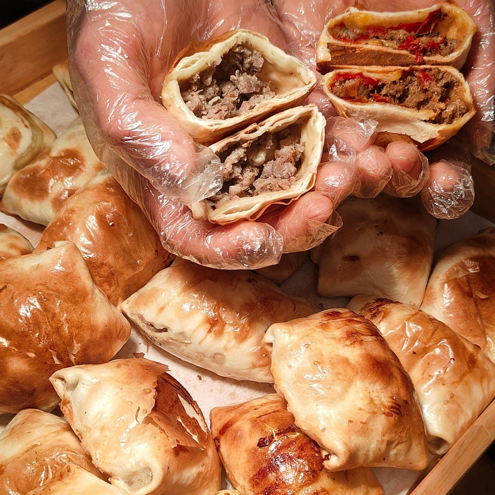

Мир уйгурской кухни Синьцзяна
Синьцзянская кухня зародилась на перекрёстках Великого шёлкового пути и вобрала в себя традиции кочевников и оазисов. Просторные пастбища и благодатные оазисы подарили миру сочный шашлык из баранины, пряный кумин, лепёшки из тандыра и тянутую вручную лапшу.
Знаменитые блюда
Шашлык из баранины
(Кавап - Шашлычки на углях)
Нежные кусочки баранины, щедро приправленные кумином и острым перцем, обжаренные на древесных углях. Легендарная уличная классика с неповторимым ароматом.

Лепёшка нан и Самса
(Тандырный нан / Самса)
Хрустящие круглые лепёшки, выпекаемые на раскалённых стенках тандыра, и слоёная самса с сочной начинкой из баранины и лука. Главная основа повседневной трапезы.

Лагман, молочный чай и йогуртовые цзунцзы
Упругая лапша ручной работы с горячей подливой из мяса и овощей (Лагман), согревающий слегка подсоленный чай с молоком и десерт из клейкого риса под густым домашним йогуртом.
История синьцзянской кухни
1. [Эпоха степей] Овцы и молоко
Место: Монгольское плато и северные степи
Уклад: Кочевой образ жизни, следование за пастбищами.

Питание: Баранина, кумыс и молочные продукты.

Суть: Традиции древних кочевых скотоводов.
2. [Эпоха оазисов] Пшеница и хлеб
Место: Переселение в оазисы Шёлкового пути
Уклад: Оседлое земледелие и торговые города.
Питание: Выращивание пшеницы, выпечка хлеба в тандырах.
Суть: Более 1000 лет назад уже было зафиксировано 13 видов хлеба.
3. [Эпоха синтеза] Встреча Востока и Запада
Место: Торговые караванные пути Таримской впадины
Уклад: Сохранение традиций халяль и впитывание соседних культур.
Питание: Принятие китайской техники быстрой обжарки на огне и элементов русской кухни.
Современность
Сочетание «мяса степей» + «пшеницы оазисов» + китайских методов приготовления сформировало неповторимый колорит уйгурской кулинарии.